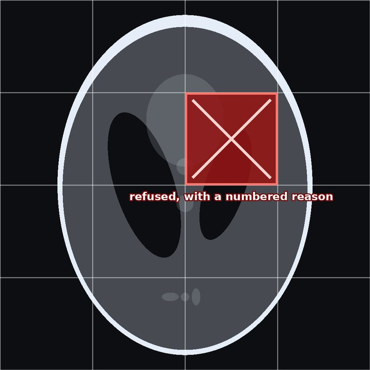

Home / Solutions / Medical devices
The decoder inside your device should refuse, not guess
For CEOs, CTOs and heads of engineering at makers of imaging devices and imaging software: modalities, PACS and archives.
Generated Shepp–Logan test phantom: no patient data
In plain words
What 100on100 does, simply
Every dot is kept
Like packing crayons so carefully that none ever breaks: when you open the box, every crayon is exactly as it was.
For you: Every value in a scan is kept, so nothing a clinician might need is thrown away.
A small program you can check
The program that opens the pictures is short, like a picture book instead of a phone book, so a grown-up can read every page.
For you: About 27 KiB (code and data; its stack is reserved, not stored): small enough for your security and regulatory reviewers to read in full.
It says no to broken files
If a picture arrives broken, or someone has tampered with it, the program does not guess. It says “this one is broken” and gives the reason as a number.
For you: A damaged study is refused with a reason, instead of being shown as a picture that looks right but is not.
Same answer on every computer
Like a sum that gives the same answer on every calculator: it uses whole numbers only, so different machines cannot drift apart.
For you: Two viewers on two different computers show exactly the same pixels.
Open just one piece
Like opening one page of a book without reading the whole book. The picture is cut into tiles, and you open only the tile you need. If one tile is damaged, the others still open.
For you: Large images can be opened region by region.
Version 1.2.0 includes a decoder for generic planes, unsigned or signed, 1 to 16 bits; medical results are not yet published, and the points above describe how the format works.
How it would work in your product
One study, cut into tiles, each one checked
A study is stored in 256 × 256 tiles, each with its own checksum. A viewer can open just the region a clinician is looking at. If a tile is damaged in storage or on the network, that tile is refused with a numbered reason and is never drawn as a picture that looks right but is not.

- Exact: the viewer shows the values the scanner wrote, not an approximation.
- The same everywhere: whole-number decoding leaves no rounding for two workstations to disagree on.
- Honest about damage: a broken tile is a refusal with a number your service team can look up.
Version 1.2.0 includes a decoder for generic planes (format version 5, kind 0), unsigned or signed; medical results are not yet published. The phantom is generated; no patient data appears on this site.
Head to head
Smaller decoder. No undetected corruption.
In a clinic, an image that is subtly wrong but decodes as if it were fine is the dangerous case. We damaged the same files the same ways for five codecs: 100on100 refused every one. (Measured on raw camera images; medical results are not yet published.)
100on100 checks a checksum over its header and over every tile, so any change to the data is caught and refused. CCSDS 121 streams and JPEG 2000 codestreams carry no integrity check over the coded data, by design; JPEG XL and JPEG-LS catch most damage through their own decoding, but not all.
Method: libjxl 0.11.2, OpenJPEG 2.5.4, CharLS 2.4.3 and libaec 1.1.6, each built from its release source the same way (size-optimised, unused code removed, runtime libraries not counted). 24 raw camera crops (CC0) encoded losslessly by every codec; each file then damaged 400 ways (one bit flipped, 4 octets overwritten, 16 octets zeroed, cut short), identically for every codec: 9,600 damaged files per codec, 48,000 in all. Full results.
Why it matters
In a regulated product, a wrong image is worse than none
- Your decoder opens files from outside your control. A malformed study must be refused with a reason, never shown as a plausible wrong image.
- Viewers must agree pixel for pixel, whatever hardware they run on.
- Imaging records are kept for decades. A format must stay readable after the software that wrote it is gone.
- Your security review and regulatory file are easier with a decoder small enough to read in full.
Refused by number
Each refusal has a code your viewer can show and your auditors can test.
Roadmap
Where it stands
The decoder, its refusal codes and its C99 version are ready today. Medical images need one more step: the DICOM bridge.
Refusal and exactness
Damaged files refused by number; one result across machines; byte-identical C99 decoder.
Generic planes, signed or unsigned
Single planes of 1 to 16 bits, unsigned or signed. The format is locked.
DICOM bridge
Pixel data in and out of DICOM, with its own fuzz-testing gate.
We have measured 100on100 on openly licensed CT, X-ray, MR and mammography images. The results will be published here after review, including where other codecs are smaller.
Briefing and demonstration
Come and see for yourself
We show 100on100 on your own data, at your site or in a remote session: the decoder, the refusals, the matching results, and where other codecs are smaller.
Request a briefing